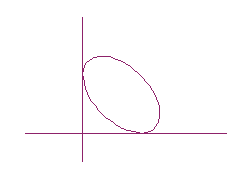
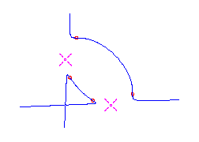
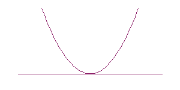
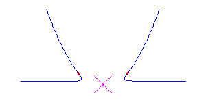
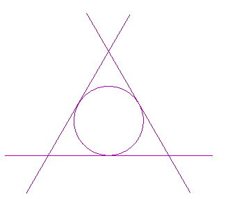
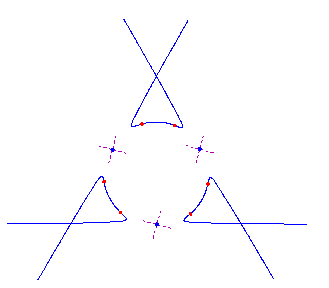
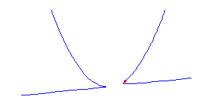
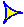

|
(deg Xz - isdz) < 4(d-1) , |
We construct maximally inflected curves of degree d with the maximum number (d-1)(d-2)/2 nodes by deforming a particular reducible curve in a precise way using Shustin's theory [Sh99] to control the singularities in the deformation. The idea for this comes from the two degree 4 curves pictured below. The curve on the right is a deformation of the reducible curve on the left.
|  |  |
The quartic curve on the right has 2 solitary points at (1,0) and (0,1) and a node at the origin. By the genus formula, it is rational. It also has 6 flexes. Four are indicated by circles, and there is one more along each asymptote, as the curvature of the segment of the curve along the asymptote is different in each of the visible branches. (The tubular neighborhood of an axis is a Möbius band.) Thus any parameterization of this curve is a maximally inflected quartic with 6 flexes, 1 node, and 2 solitary points.
The more sophisticated ideas needed for the general construction are provided by Shustin's theory. We describe the ingredients of this deformation, verify that it is valid, and lastly show that the curve we constructed has the desired properties. Fix an integer d > 2 throughout and let P0 be the union of a conic and any d-2 distinct lines tangent to the conic. Then P0 is a reducible curve of degree d. Each pair of tangents meet and no three meet in a point as the dual curve to the conic is another conic. Thus P0 has (d-2)(d-3)/2 simple nodes and d-2 other singularities at the points of tangency. We deform those tangency singularities while preserving the nodes.
In a neighborhood V of each point of tangency, Pd is isomorphic to the reducible curve K0 given by the equation
| y(y - x2) + tx2 = 0 . | (1) |
|  |  |
If a certain cohomology group vanishes, then Shustin's Theorem [Theorem 1 in Sh99] guarantees the existence of a real number e>0 and of a deformation Pt of the curve P0 for t in the interval (0,e) such that (1) Pt has degree d, (2) Pt has a node in a neighbourhood of each node of P0, and (3) in a neighborhood V of each point of tangency of P0, Pt is isomorphic to Kt, in the neighborhood U of the origin. Another result of Shustin [Lemma 3 in Sh99] gives the numerical criterion for the vanishing of this cohomology group
| |
(deg Xz - isdz) < 4(d-1) , |
For 0 < t < e, the curve Pt has (d-2)(d-3)/2 nodes and d-2 solitary points, by the construction. Since it has degree d, it is rational. Also from the construction, we see that each solitary point contributes 2 flexes, accounting for 2(d-2) flexes. Furthermore, there is an additional flex along each asymptote (the original tangent lines) as the concavity of Pt changes while passing through infinity. Thus any parameterization of the curve Pt gives a maximally inflected curve of degree d with 3(d-2) flexes, (d-2)(d-3)/2 nodes and d-2 solitary points. Here is a picture of the reducible curve and the maximally inflected deformation, when d=5.
|  |  |
Theorem.
For each k between 0 and d-2, there is a maximally inflected
curve with k cusps, 3(d-2)-2k flexes,
d-2-k solitary points, and
(d-2)(d-3)/2 nodes.
Proof . In the previous construction, we may replace the local model Kt defined in (1) by the local model Lt defined by
| y(y - x2) + tx3 = 0 . | (2) |
|  |
| The result follows as we may do this for any of the d-2 tangency points. |  |
For t > 0, the cusp in the curve Lt (2) is on the branch to the left of the origin. Had we instead used the perturbation Mt given by
References
[Sh99]
E. Shustin, Lower deformations of isolated hypersurface
singularities, Algebra i Analiz, 10 (1999), pp. 221--249.